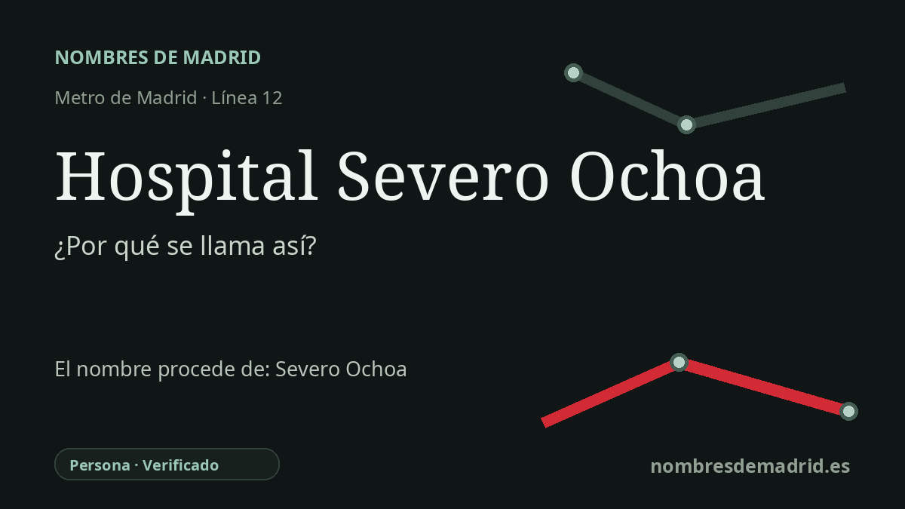

Publicado el · Investigación de Nombres de Madrid · Cómo verificamos cada origen · 8 fuentes consultadas
Respuesta rápida
La estación Hospital Severo Ochoa se llama así por el hospital de Leganés situado junto a ella. El hospital honra a Severo Ochoa de Albornoz, bioquímico nacido en España y premio Nobel de Fisiología o Medicina en 1959.
La historia del nombre
El nombre de la estación procede primero de un lugar: el Hospital Universitario Severo Ochoa, junto a la avenida de Orellana en Leganés. El Consorcio Regional de Transportes de Madrid identifica la parada como Hospital Severo Ochoa en la línea 12, con accesos por la avenida de Orellana y conexión con varias líneas de autobuses interurbanos.
Detrás del nombre del hospital está Severo Ochoa de Albornoz, nacido en Luarca, Asturias, el 24 de septiembre de 1905. Ochoa se formó como médico, llegó a ser una figura clave de la bioquímica del siglo XX y desarrolló buena parte de su carrera científica fuera de España, especialmente en Estados Unidos.
La relación con el hospital es especialmente directa. La historia publicada por la Comunidad de Madrid indica que el centro empezó a prestar asistencia sanitaria en 1987 y que el doctor Severo Ochoa lo inauguró en marzo de 1988. Una crónica contemporánea de El País precisa que la inauguración oficial tuvo lugar el día anterior, 3 de marzo de 1988, con la presencia del vicepresidente Alfonso Guerra, el ministro de Sanidad Julian Garcia Vargas y el propio Ochoa.
La conexión con el Nobel es esencial para entender el homenaje. NobelPrize.org registra que Ochoa compartió el Premio Nobel de Fisiología o Medicina de 1959 con Arthur Kornberg por descubrimientos relacionados con la síntesis biológica del ácido ribonucleico y del ácido desoxirribonucleico. Esa formulación es algo más amplia y precisa que decir solamente que descubrió enzimas implicadas en la síntesis del ARN.
La estación de Metro llegó después, con la apertura de MetroSur el 11 de abril de 2003. La Comunidad de Madrid describe la línea 12 como un gran anillo de unos 40 kilómetros que conecta Alcorcón, Móstoles, Fuenlabrada, Getafe y Leganés; su propia documentación sitúa la estación Hospital Severo Ochoa en la avenida de Orellana, junto al Parque Miguel de Cervantes y el Barrio de los Frailes. Esa misma documentación menciona los grandes murales de la estación, 'ADN y Lunas', un guiño artístico muy adecuado a la ciencia molecular asociada a la memoria pública de Ochoa.